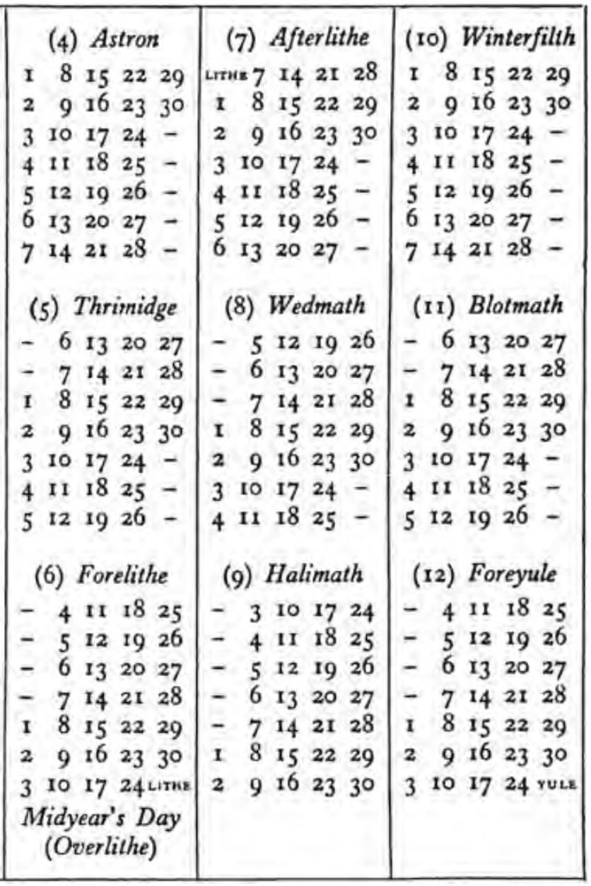

APPENDIX D SHIRE CALENDAR FOR USE IN ALL YEARS (1) Afteryule (4) Astron (7) Afterlithe | (10) Winterfilth vus’7 14 21 28 8 15 22 29 8 15 22 29 1 8 15 22 29 9 16 23 30 9 16 23 30 2 9 16 23 30 10 17 24 - 10 17 24 — 3 10 17 24 - tr 18 25 Ir 18 25 4 11 18 25 - 12 19 26 12 19 26 5 12 19 26 - 13 20 27 - 13 20 27 6 13 20 27 - 14 21 28 - 13 20 27 - 14 21 28 (2) Solmath (5) Thrimidge | (8) Wedmath | (11) Blotmath - § 12 19 26 13 20 27|- § 12 19 26|- 6 13 20 27 - 6 13 20 27 14 21 28] - 6 13 20 27 14 21 28 - 714 21 28 15 22 29|— 7 14 21 28 15 22 29 1 8 15 22 29 16 23 30 8 15 22 29 16 23 30 2 9 16 23 30 17 24 - 9 16 23 30 17 24 310 17 24 - 11 18 25 —- 10 17 24 - tr 18 25 411 18 25 - 12 19 26 - 11 18 25 - 12 19 26 (3) Rethe (6) Forelithe (9) Halimath | (12) Foreyule - 31017 24 4 tr 18 25 10 17 24|—- 4 11 18 25 - 4.11 18 25 5 12 19 26 ir 18 25 | - I2 19 26 - § 12 19 26 6 13 20 27 12 19 26 | - 13 20 27 — 613 2027/-— 7 14 21 28 13 20 27 14 21 28 - 714 21 28/1 8 15 22 29 14 21 28 15 22 29 r 8 15 22 29 | 2 16 23 30 1§ 22 29 16 23 30 9 16 23 30 | 3 10 17 24citme 16 23 30 17 24 vure Midyear's Day (Overlithe) Every year began on the first day of the week, Saturday, and ended on the last day of the week, Friday. The Mid-year’s Day, and in Leap-years the Overlithe, had no weekday name. The Lithe before Mid-year’s Day was called 1 Lithe, and the one after was called 2 Lithe. The Yule at the end of the year was 1 Yule, and that at the beginning was 2 Yule. The Overlithe was a day of special holiday, but it did not occur in any of the years important to the history of the Great Ring. It occurred in 1420, the year of the famous harvest and wonderful summer, and the merrymaking in that year is said to have been the greatest in memory or record.
